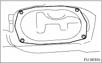
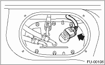
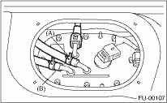
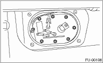

WARNING:
Place “NO OPEN FLAMES” signs near the working area.
CAUTION:
Be careful not to spill fuel.
NOTE:
Fuel pump assembly consists of fuel pump, fuel filter, and fuel level sensor.
1. Release the fuel pressure. 
2. Disconnect the ground cable from the battery.

3. Open the fuel filler flap lid, and remove the fuel filler cap.
4. Remove the luggage floor mat.
5. Remove the service hole cover.

6. Disconnect the connector from fuel pump.

7. Disconnect the quick connector and then disconnect the fuel delivery hose.
8. Move the clips, and disconnect the fuel return hose (A) and jet pump hose (B).

9. Remove the nuts which install fuel pump assembly onto fuel tank.

10. Remove the fuel pump assembly from the fuel tank.